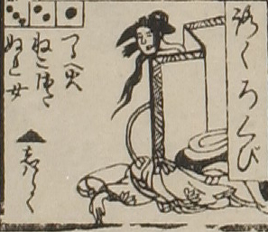

ろくろ首；ロクロクビ，女；オンナ

ろくろ首。長い首の先に、髷を結った女の頭がついている。体は横たわっている。
出典：親書誌：U426_nichibunken_0082：新版妖怪飛巡雙六；シンパンヨウカイトビマハリスゴロク／日付：2007／資源識別子：U426_nichibunken_0082_0017_0000
Copyright (c)2010- International Research Center for Japanese Studies, Kyoto, Japan. All rights reserved.